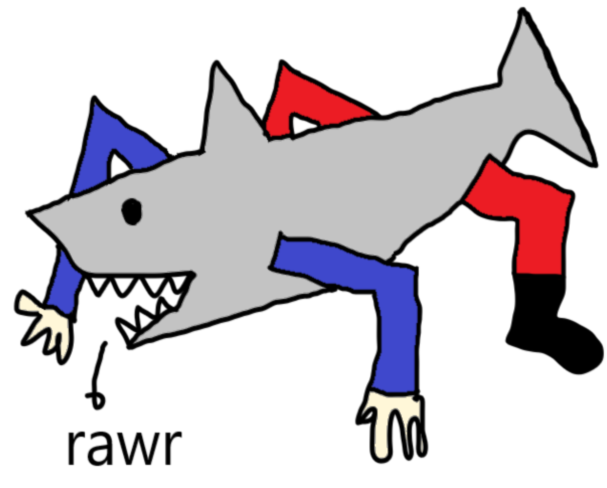

Along with being responsible for what goes on the radio, we're also responsible for video projects as well. Our biggest project ever was the Lip Dub. A Lip Dub is when we get footage of students dancing down the hall with other students around them. Then we dub over the footage with music.
So far, we have two Lip Dubs under our belt, the first has over 600,000 views! The other has about 7,000, but is expected to rise over time. Pretty good for a small town high school.
This is our first Lip Dub filmed in September of 2018
Here's our second, filmed in January 2020.
Both made by Tiger Media, AKA Tiger Radio Youtube Channel!
Youtube Projects
Once every semester we are required to make Youtube videos. We do this to help our video editing skills. A lot of the members channels are very high quality. That's why we listed a few of them to give them some exposure.

Landshark Productions
Landshark productions is owned by Eli Rainey, Sophomore at HCHS. He makes short, very high quality videos about whatever comes to his mind. His favorite video is "The Eli Rainey Show EP 1 Finding the Zodiac Killer. Where you can also find several other members of Tiger Radio.